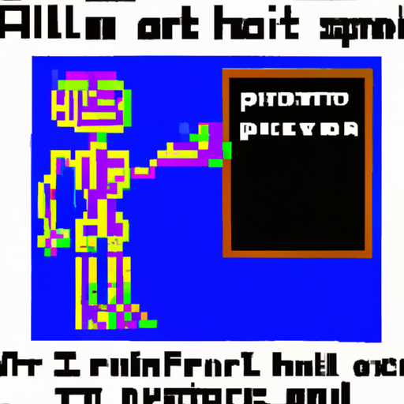

Why AI will never replace the radiologist
Artificial Intelligence (AI) is an incredibly powerful tool, capable of performing many tasks that humans thought impossible just a few decades ago. But can AI really replace the radiologist?
In short, no. Despite the incredible accuracy and speed of AI, there are still many elements of human judgment and intuition that AI simply can not replicate. For example, AI algorithms could not reliably identify subtle differences between healthy and unhealthy tissue, or detect subtle patterns that could indicate a medical issue.
Moreover, AI algorithms can only be as accurate as the data they are trained on, which is limited by the availability and quality of the data. This means that AI algorithms are subject to human biases and errors that can be difficult to detect and correct.
In the end, AI can be a powerful tool in the radiologist's toolbox, but it will never replace the radiologist. AI can be used to reduce radiologist workloads, improve accuracy, and streamline the workflow, but it can never replace the human element in radiology.